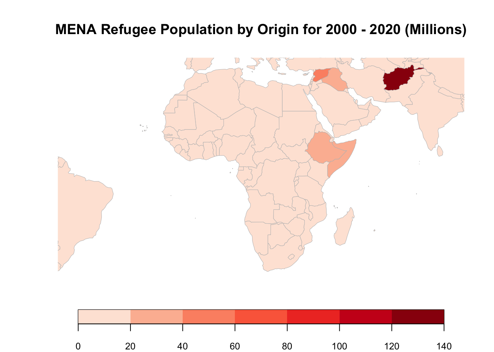
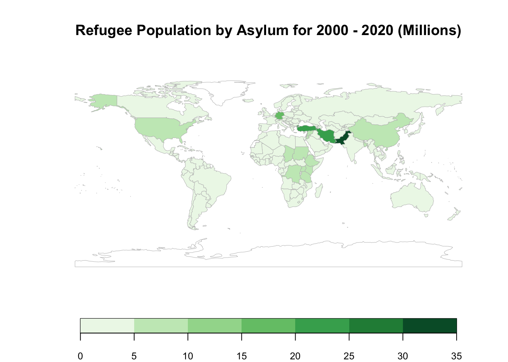
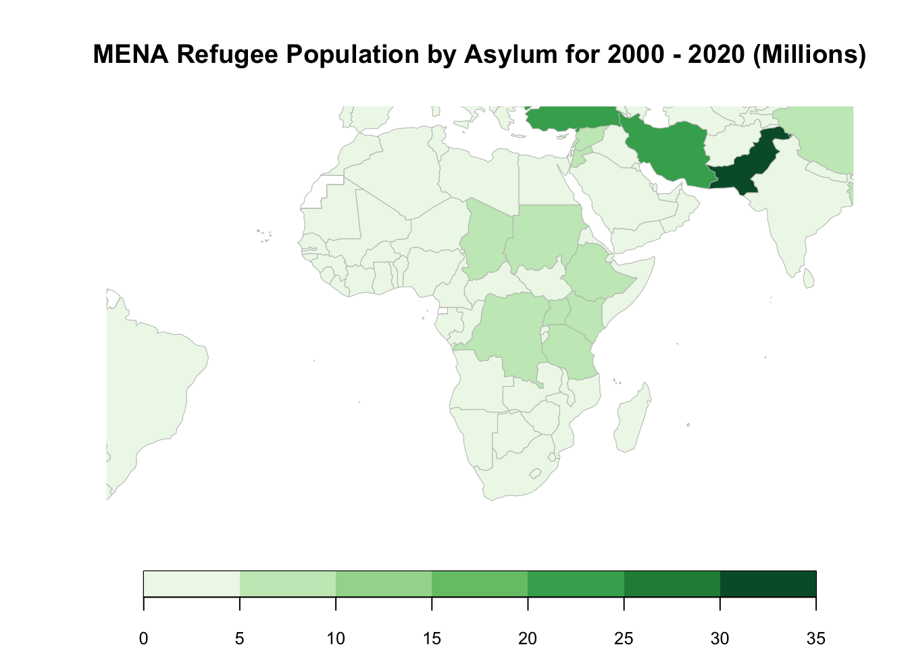
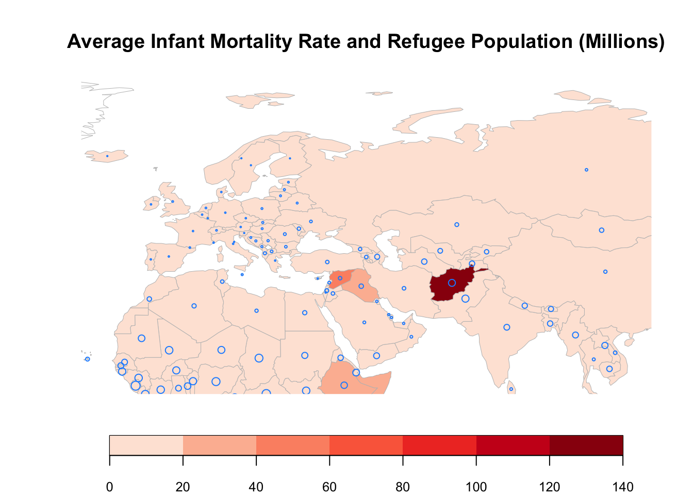
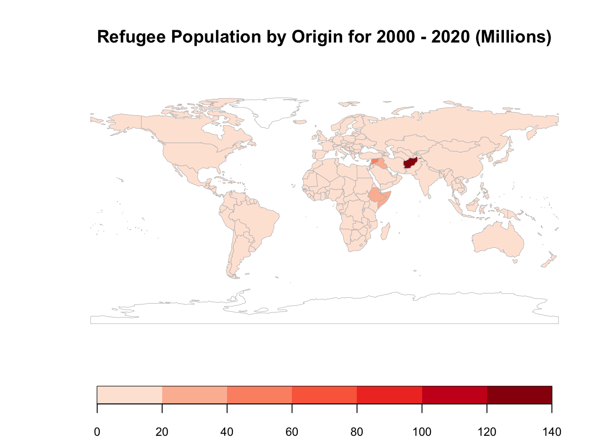
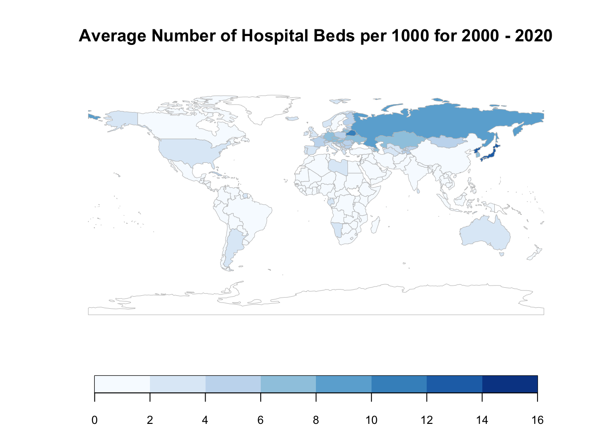
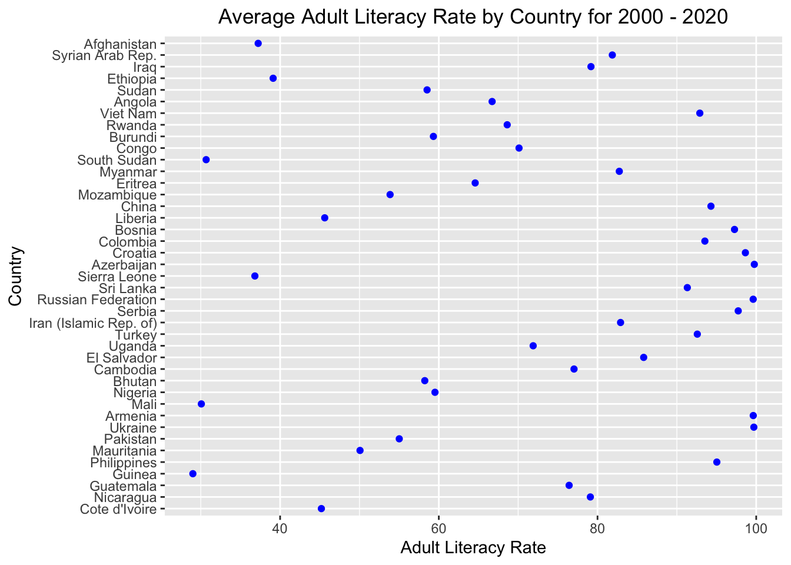
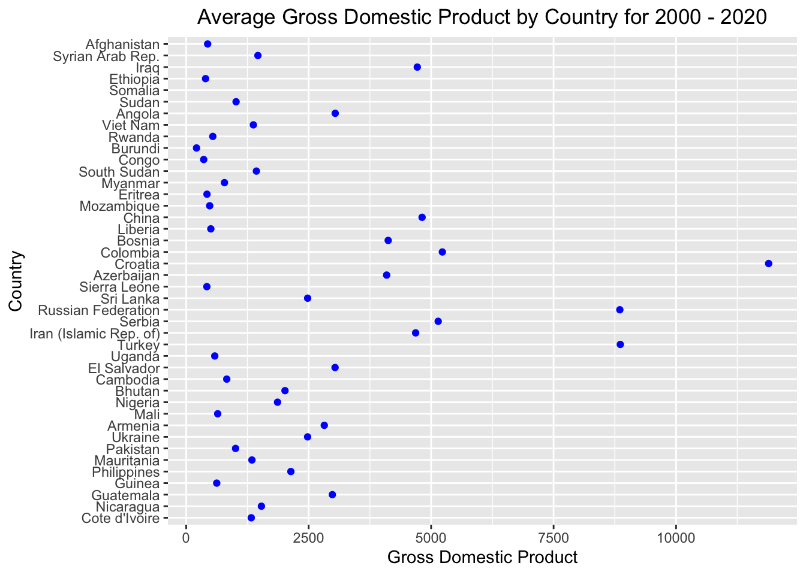
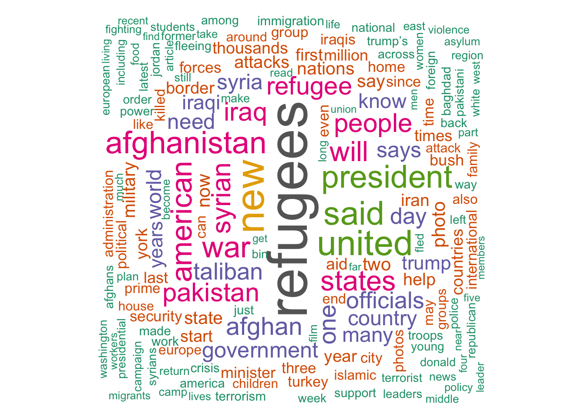

Chapter 5 Results
5.1 Which countries do most Refugees come from?

It can be seen that a significant number of refugees come from the Middle East and North Africa (MENA) Region.

Taking a closer look at the MENA Region, we observe Afghanistan, Syria, Iraq, Somalia and Sudan to be the Top 5 Countries of Origin for Refugees Globally.
5.2 Which countries do most Refugees go to?

It can be seen that a significant number of refugees go to the Middle East and North Africa (MENA) Region. There is also some number of Refugees that go to the North America and Asia Regions.

Taking a closer look at the MENA Region, we observe that the Top Countries by Asylum are neighboring to the Top Countries by Origin. This falls in line with expectations as Most Refugees travel by Road and thus can’t travel to farther regions.
(Source - https://www.roads-to-refuge.com.au/journeys/journeys-crossing.html)
One interesting takeaway from the Origin and Asylum Maps is that Syria and Ethiopia show up in both Top Countries by Origin and Top Countries by Asylum. This indicates that there is a significant number of Internally Displaced People in these 2 countries. (Refugees within their own Country)
5.3 What are some indicators of Refugee Migration?
5.3.1 Infant Mortality Rate

The above Map shows Refugee Population by Origin for 2000 - 2020 in Millions overlayed with Bubbles whose size correspond to Average Infant Mortality Rate by Country. Thus, a large bubble indicates a high mortality rate while a small bubble indicates a low mortality rate. Absolute values for Infant Mortality Rate have been omitted since this visualization is only trying to observe correlations.
It can be observed that the countries having High Number of Refugees also tend to have Higher Infant Mortality Rates as the Darker Regions on the Map have Bigger Circles in them. This can be expected because Infants are the most affected by the Refugee Lifestyle.
5.3.3 Hospital Beds

Looking at the above 3 Maps, no obvious relation can be observed between either Country of Origin & Hospital Beds or Country of Asylum & Hospital Beds as the High and Low values for Each Map are observed at different places.
5.3.4 Literacy Rate

This plot shows the countries on y-axis in decreasing order of Number of Refugees. It can be said that Countries with Literacy Rates greater than 90% generally have Low Number of Refugees.
5.3.5 Gross Domestic Product

This plot shows the countries on y-axis in decreasing order of Number of Refugees. It can be said that Countries with very high GDP per Capita generally have Low Number of Refugees.
5.4 Do the Countries with Most Refugees show some Common Trend?
ALR - Average Adult Literacy Rate
YLR - Average Youth Literacy Rate
IMR - Average Infant Mortality Rate
PID - Average Percentage of Injury Deaths
DR - Average Death Rate per 1000
HB - Average Hospital Beds per 1000
GDP - Average Gross Domestic Prouct per Capita (USD)
After filtering the Top 5 Countries by the Number of Refugees on the Interactive Plot, it can be seen that they show a similar trend in some variables. The usually have Medium Literacy Rates, High Injury-Related and Overall Death Rates, Low Hospital Beds & Low GDP per Capita.
5.5 Can the Findings of the Analysis be validated?

The Wordcloud created from scraping relevant New York Times articles since 2000 provides some very interesting insights into the Refugee Crises around the World. Words like Millions, Killed, Lives and Home shed some light on the seriousness of the problem. Violence, Terrorism, Students and Children are some of the Top Words and the presence of these words validate the previous graphical analysis. In addition, there are some words like America, Donald, Trump and Bush which require a Deeper Contextual Analysis.